During this week we've learned about composite materials, their feautres and the various techniques in order to make objects using different composite materials.
In fact, the assignment of this week is design and make a 3D mold, and produce a fiber composite part in it.
One of my favorite projects was to build a small boat, make it resistant, then later apply an engine with remote control on it so I can have fun playing with it this summer.
In this work, I decided to proceed on this way:
- Design the 3D structure of the boat on the computer
- 3D print the structure/mold of the board using a 3D printer and PLA material. In my case I will need a mold in order to make a positive, but my 3D structure will be integrating part of the final object
- Apply composite material on boat structure in order to make it isolated, harder, and paintable
The Rhino, I developed first the following boat model:
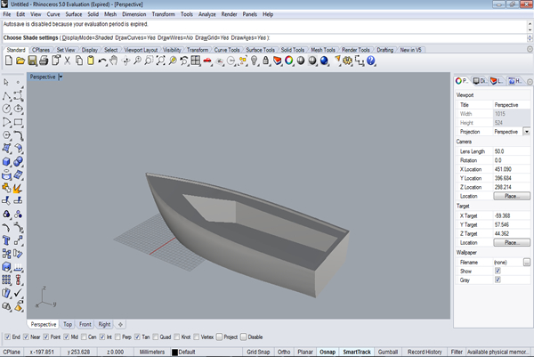
I printed a very small one, in order to evaluate its floating/buoyancy features, and I got this one:
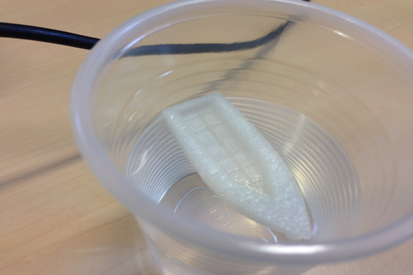
After this testing work, I made some small changes and then proceed with real-size 3D printing:
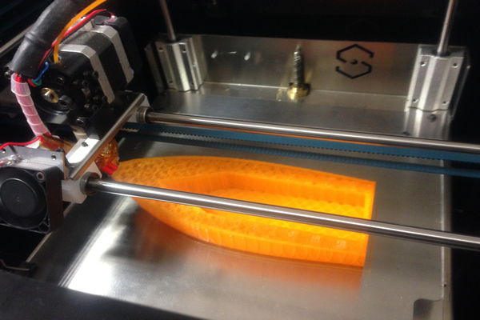
Step 2: Printing final mold:When I printed the real-size boat structure, I tested it on water. The floating test has passed, but the I noticed that I had some stability and aero-dynamic problems that I had to resolve.
As a solution, I designed two stabilizers that I will 3D print and attach to the boat. This is what I got:
Here is the scheme I used to connect electronic components to the board:
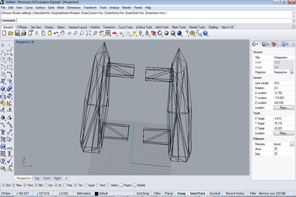
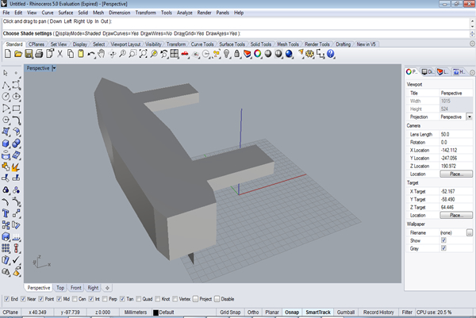
And after I 3D print the two stabilizers, I attached them to the original boat. Here is the final structure of the boat:
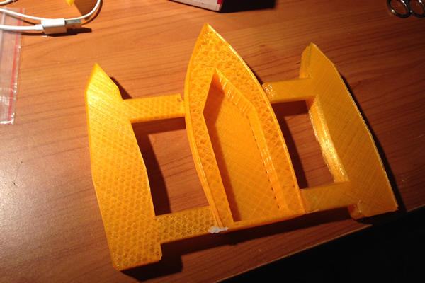
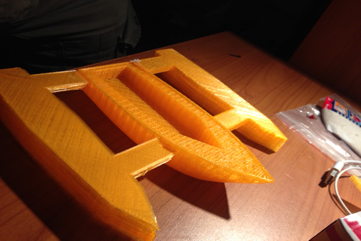
Step 3: Composite materials:Now that I have the boat final structure ready, I moved to applying composite materials. In the exercise, I decided to use glass fiber composite material with polyester resin. Therefore, I got:
- Sheets of glass fiber
- Jar of polyester resin
- Catalyst for the reaction between resin and glass fiber
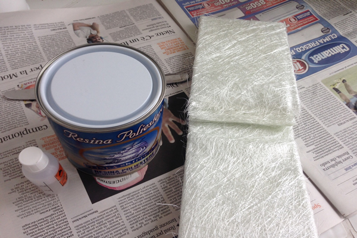
I started cutting sheets of glass fiber according to the design of the boat like this:
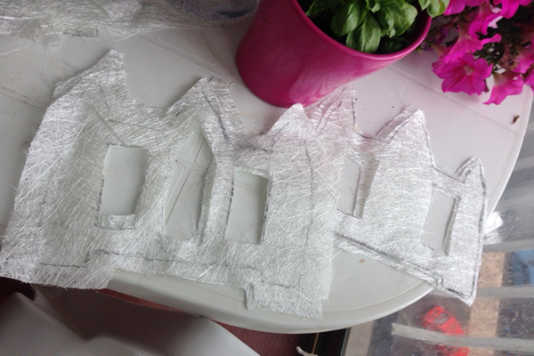
Then, I prepared the polyester resin with the catalyst following the dosage indications on the resin container:
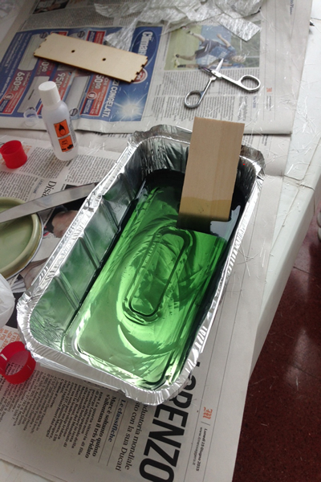
At this level, I applied glass fiber sheets one after the other, and in between the polyester resin in order to attach them to the structure and to each other, and to make them hard:
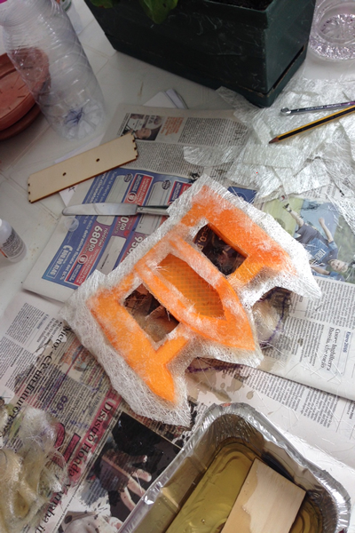
And finally, this is the final product I got:
The design files are available for downloand here: